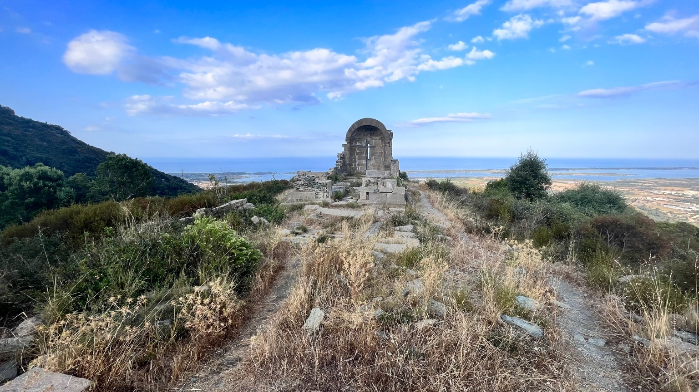

Biguglia Evening Hike
A late-day outing starting from the village of Biguglia, former medieval capital of Corsica. A gentle heritage walk and hike to enjoy golden evening light, peaceful atmospheres and sunset views, finished with a tasting of local products.
View details
Start time: 6 pm (May to October).
Location: Village of Biguglia.
Focus: heritage discovery, nature, viewpoints, evening atmosphere.
Route: village visit and castle ruins, hike to a ruined Romanesque chapel, light dinner aperitif with local products, return with headlamp.
Level: easy – suitable for everyone.
Elevation gain: around 200 m.
Duration: 2.5 to 4 hours (depending on group pace).
Equipment: hiking shoes, water, warm layer, headlamp provided if needed.